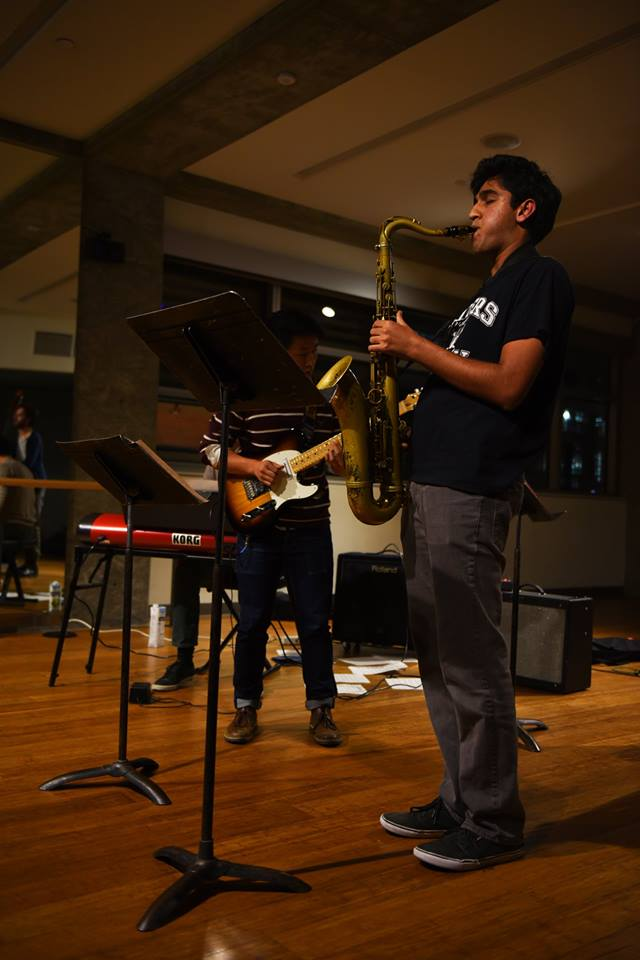

Join
Audition Requirements for Fall 2023
Auditions will be in-person in the Fall and will be on Monday Aug. 28, Tuesday Aug. 29, and Wednesday Aug. 30 from 11-4PM. Sign up sheets will be posted on the UC Jazz bulletin board in the basement of the Cesar Chavez building. Auditions will consist of 3 parts: scales, sight-reading, and playing along to a pre-recorded track. There will be a list of tunes at the audition that you can choose from to show your improv skills.
Fall 2022 Schedule
- Ted Moore Advanced: Mon 11-1
- Frank Martin Advanced: Mon 7-9
- Dann Zinn Advanced: Thurs 2-4
- World Music Ensemble (Kai Eckhardt): Wed 11-1
- Glenn Richman Intermediate: Mon 1-3
- Ted Moore Intermediate: Tues 1-3
- Marty Wehner Intermediate: Tues 11-1
- Beginning Combos: TBD
- Big Band: Wed 7-9
World Music Ensemble
This Fall of 2022, UC Jazz will offer a brand new ensemble called the World Music Ensemble. It will be taught by world-renown bassist, Kai Eckhardt, who is highly qualified to teach this ensemble following years of travelling the world and playing and recording with great artists like guitarist John McLaughlin. The ensemble will be improv based but outside the usual traditional jazz vocabulary and styles. We hope to attract instrumentalists of varying cultures, especially who play instruments not normally associated with jazz and to collect a unique ensemble of players intent on sharing ideas from various cultures and styles. Repertoire will depend on instrumentation and will be very flexible. Please contact Ted Moore for more information at tmoore@ucjazz.berkeley.edu
Attendance Policy

When you participate in UC Jazz, it is important that you are aware of our attendance policy. Attendance is mandatory! This means that barring extreme events we will expect you to be at all rehearsals.
UC Jazz follows a three strikes model for missing rehearsals. You are permitted to miss two rehearsals a semester for legitimate reasons. After the third miss, you will be subject to review and may lose your place in UC Jazz.
Acceptable reasons for not being able to make a rehearsal include illness, midterms, and serious emergencies. Unacceptable reasons for missing rehearsal include projects, homework, and the like. All students have these commitments, and you are expected to manage your time such that you can make rehearsal. Check the rehearsal times, and audition for a combo only when you are certain that you can make ALL the rehearsals.
If you know that you cannot make it to a rehearsal, please notify Ted as far in advance as possible so that a replacement may be found. This is especially important for rhythm section players! Rehearsals suffer greatly without the support of a full rhythm section.
Time Requirement
Each year there are questions, especially from new students, about the time requirements for UC Jazz. This depends on your individual commitment to becoming a better player. The rehearsals are only two hours a week, however It is expected that everyone will spend time each week working on the tunes from the previous class especially to become more comfortable with the changes in order to be a better soloist. In addition, those who use the Aebersold play along tracks for individual practice (provided by UC Jazz) will find that their playing improves much faster than those who do not.
In a few cases, students may be looking at UC Jazz as a “distraction” from other classes. Rest assured that UC Jazz is NOT designed as a distraction but rather as the study of a very rewarding discipline that will pay off if you put in the time. If you need a distraction, probably better to look elsewhere. You can count on substantial rewards and significantly more enjoyment of this art form if you put in the time.
Dues
UC Jazz charges dues each semester (currently $95 per semester) to cover use of instruments, amps, drums, etc. and also use of practice rooms. This applies to all members of UC Jazz, undergrad students, grad students, community members and DeCal.
Leadership Positions
In addition to playing in our combos, you can become even more involved by joining the committee of student officers within UC Jazz. UC Jazz student officers have had a big impact on the program over the years and becoming an officers gives you the opportunity to directly affect department activities.
Music Department Credit
It is possible for Music Majors only to receive credit for participation in UC Jazz, when chosen as an ensemble elective. Please check with the Music Department for further information and with any qualification questions.